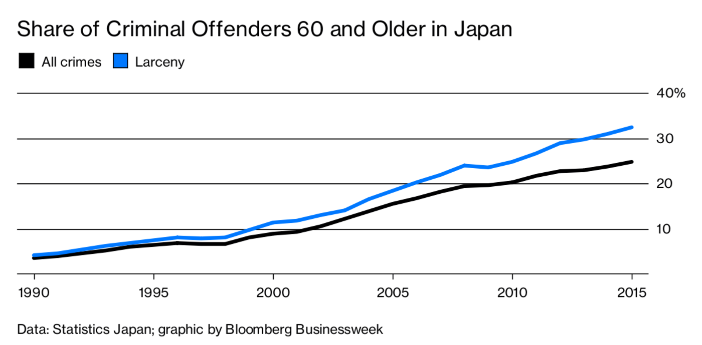
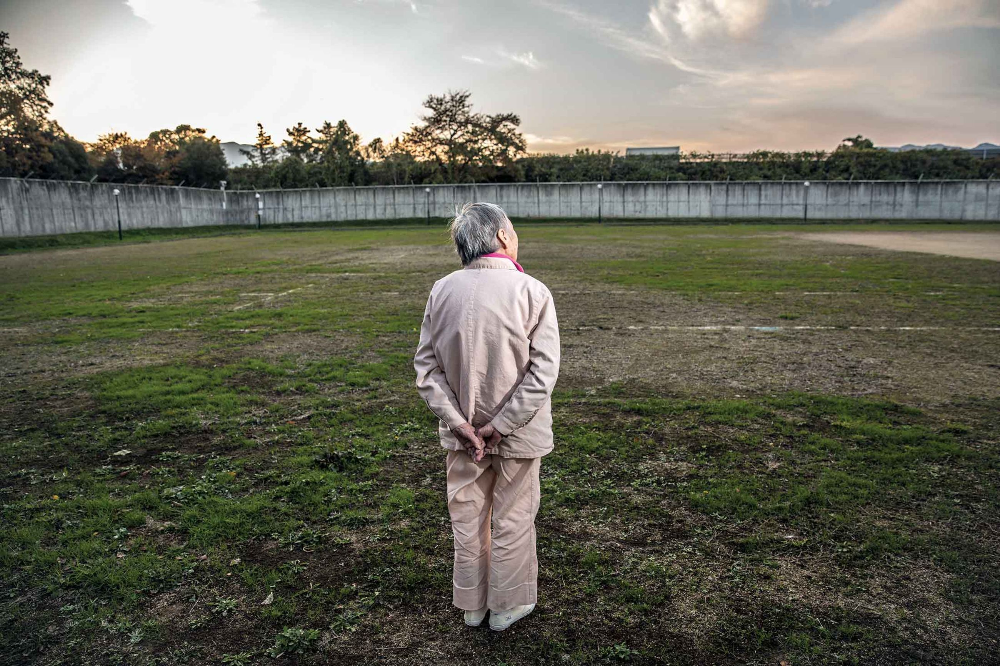
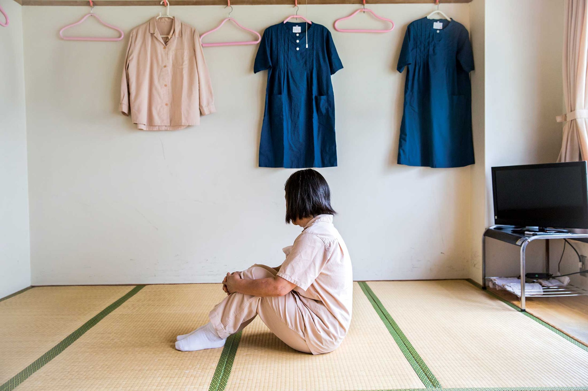
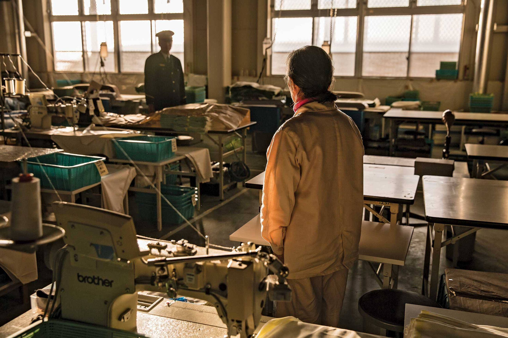
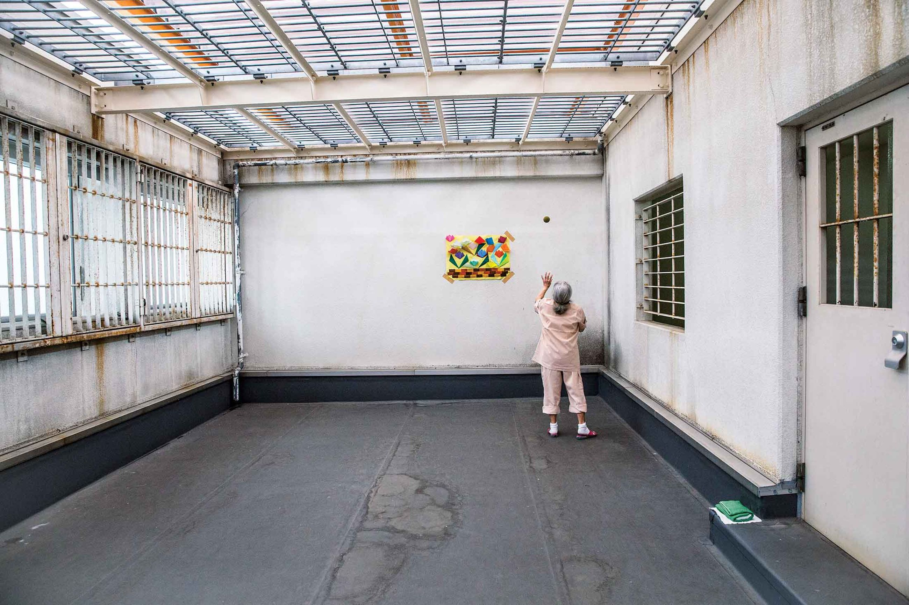
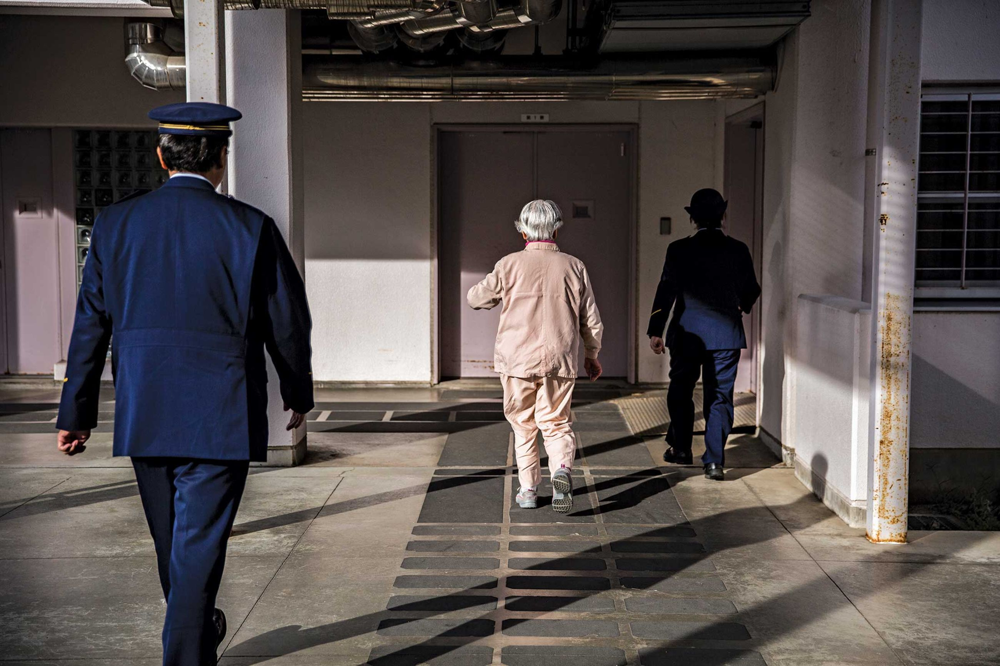

Japan's Prisons Are a Haven for Elderly Women
Lonely seniors are shoplifting in search of the community and stability of jail.
By Shiho Fukada
16th march 2018, 09:00 CET
Every aging society faces distinct challenges. But Japan, with the world's oldest population (27.3 percent of its citizens are 65 or older, almost twice the share in the U.S.), has been dealing with one it didn't foresee: senior crime. Complaints and arrests involving elderly people, and women in particular, are taking place at rates above those of any other demographic group. Almost 1 in 5 women in Japanese prisons is a senior. Their crimes are usually minor—9 in 10 senior women who've been convicted were found guilty of shoplifting.
Why have so many otherwise law-abiding elderly women resorted to petty theft? Caring for Japanese seniors once fell to families and communities, but that's changing. From 1980 to 2015, the number of seniors living alone increased more than sixfold, to almost 6 million. And a 2017 survey by Tokyo's government found that more than half of seniors caught shoplifting live alone; 40 percent either don't have family or rarely speak with relatives. These people often say they have no one to turn to when they need help.
Even women with a place to go describe feeling invisible. “They may have a house. They may have a family. But that doesn't mean they have a place they feel at home,” says Yumi Muranaka, head warden of Iwakuni Women's Prison, 30 miles outside Hiroshima. “They feel they are not understood. They feel they are only recognized as someone who gets the house chores done.”
Elderly women are also often economically vulnerable—nearly half of those 65 or older who live alone also live in poverty relative to the broader population, for example, compared with 29 percent of men. “My husband died last year,” one inmate says. “We didn't have any children, so I was all alone. I went to a supermarket to buy vegetables, and I saw a package of beef. I wanted it, but I thought it would be a financial burden. So I took it.”
Neither the government nor the private sector has established an effective rehabilitation program for seniors, and the costs to keep them in prison are rising fast. Expenses associated with elder care helped push annual medical costs at correctional facilities past 6 billion yen (more than $50 million) in 2015, an 80 percent increase from a decade before. Specialized workers have been hired to help older inmates with bathing and toileting during the day, but at night these tasks are handled by guards.
At some facilities, being a correctional officer has come to resemble being a nursing-home attendant. Satomi Kezuka, a veteran officer at Tochigi Women's Prison, about 60 miles north of Tokyo, says her duties now include dealing with incontinence. “They are ashamed and hide their underwear,” she says of the inmates. “I tell them to bring it to me, and I will have it washed.” More than a third of female correctional officers quit their jobs within three years.
In 2016, Japan's parliament passed a law aiming to ensure that recidivist seniors get support from the country's welfare and social-service systems. Since then, prosecutor's offices and prisons have worked closely with government agencies to get senior offenders the assistance they need. But the problems that lead these women to seek the relative comfort of jail lie beyond the system's reach.
Ms. F, 89.
Has stolen rice, strawberries, cold medicine.Second term, sentenced to a year and a half.Has a daughter and a grandchild.
“I was living alone on welfare. I used to live with my daughter's family and used all my savings taking care of an abusive and violent son-in-law.”
Ms. A, 67.
Has stolen clothing. First term, sentenced to two years, three months Has a husband, two sons, and three grandchildren.
“I shoplifted more than 20 times, all clothes, not expensive ones, mostly on sale on the street. It's not that I was in need of money. The first time I shoplifted, I didn't get caught. I learned that I could obtain what I wanted without paying for it, which I found fun, amusing, exciting.
“My husband has been supportive. He writes me regularly. My two sons are angry—my three grandchildren don't know I'm here. They think I'm hospitalized.”
Ms. T, 80.
Has stolen cod roe, seeds, a frying pan. Fourth term, sentenced to two and a half years. Has a husband, a son, and a daughter.
“When I was young, I didn't think about stealing. All I thought about was working hard. I worked at a rubber factory for 20 years and then as a care worker at a hospital. Money was always tight, but we still got to send our son to college.” “My husband had a stroke six years ago and has been bedridden ever since. He also has dementia and suffers from delusions and paranoia. It was a lot to take care of him physically and emotionally because of my old age. But I couldn't talk about my stress with anyone because I was ashamed.”
“I was imprisoned for the first time when I was 70. When I shoplifted, I had money in my wallet. Then I thought about my life. I didn't want to go home, and I had nowhere else to go. Asking for help in prison was the only way.” “My life is much easier in prison. I can be myself and breathe, however temporarily. My son tells me I'm ill and I should be hospitalized in a mental institution and take it easy. But I don't think I'm ill. I think my anxiety drove me to steal.”
Ms. N, 80.
Has stolen a paperback, croquettes, a hand fan. Third term, sentenced to three years, two months. Has a husband, two sons, and six grandchildren.
“I was alone every day and feeling very lonely. My husband gave me a lot of money, and people always told me how lucky I was, but money wasn't what I wanted. It didn't make me happy at all.” “The first time I shoplifted was about 13 years ago. I wandered into a bookstore in town and stole a paperback novel. I was caught, taken to a police station, and questioned by the sweetest police officer. He was so kind. He listened to everything I wanted to say. I felt I was being heard for the first time in my life. In the end, he gently tapped on my shoulder and said, ‘I understand you were lonely, but don't do this again.'”
“I can't tell you how much I enjoy working in the prison factory. The other day, when I was complimented on how efficient and meticulous I was, I grasped the joy of working. I regret that I never worked. My life would have been different.” “I enjoy my life in prison more. There are always people around, and I don't feel lonely here. When I got out the second time, I promised that I wouldn't go back. But when I was out, I couldn't help feeling nostalgic.”
Ms. K, 74.
Has stolen Coca-Cola, orange juice. Third term, sentence undisclosed. Has a son and a daughter.
“I was living on welfare. It was hard. When I'm released, I will manage to live with 1,000 yen [$9] a day. I don't have anything to look forward to outside.”
Ms. O, 78.
Has stolen energy drinks, coffee, tea, a rice ball, a mango. Third term, sentenced to one year, five months. Has a daughter and a grandson.
“Prison is an oasis for me—a place for relaxation and comfort. I don't have freedom here, but I have nothing to worry about, either. There are many people to talk to. They provide us with nutritious meals three times a day.”. “My daughter visits once a month. She says ‘I don't feel sorry for you. You're pathetic.' I think she's right.”
This reporting was supported by the Pulitzer Center on Crisis Reporting and the International Women's Media Foundation.